O que
fica.
Algumas histórias não pedem palavras.
Pedem um olhar que saiba permanecer.
Antes de uma imagem,
existe um olhar.
Algumas coisas não precisam ser explicadas. Só precisam ser sentidas.

A luz
encontra.
Nem toda história começa com palavras. Algumas começam com um olhar.
O gesto
permanece.
Entre o que acontece e o que lembramos, existe uma fotografia.
O tempo
não leva tudo.
O instante passa. A sensação escolhe ficar.
É sobre aquilo que acontece antes que alguém perceba a câmera.
Entre o instante
e a saudade,
existe uma imagem.
Histórias
em imagens.
Um recorte de rostos, silêncios, encontros e lugares. Fotografias que não precisam explicar tudo.
IMAGENS DE REFERÊNCIA — seleção visual temporária para apresentar a direção artística. Em breve, fotografias autorais.


Cada imagem é um começo, nunca um ponto final.
O mundo
lá fora.
Há instantes em que tudo parece parar. E é justamente aí que a imagem começa.
O silêncio
também fala.
O que não foi dito encontra um lugar na luz, no gesto, na distância.
E alguma
coisa fica.
Mesmo quando a cena termina, a sensação encontra outra forma de existir.
Tudo muda.Mas alguma coisapermanece.
A beleza de
ser movimento.


A noite
também vive.
Um palco, uma cidade, uma multidão. Histórias que aparecem quando o mundo acende suas próprias luzes.

O instante antes do último aplauso.
Arquivo visual / Referência
Tudo vibra.
Som / Cultura / Encontro
Prazer,
pedrogabry.
Fotografo o que me atravessa. A energia de um palco, a delicadeza de um gesto, a personalidade de um rosto, a história que vive nos detalhes.
Meu trabalho nasce da vontade de transformar momentos passageiros em algo que se possa revisitar — com verdade, sensibilidade e uma estética própria.
Um jeito
de olhar.
- 01 Sentir antes de fotografar.
- 02 Encontrar beleza no imperfeito.
- 03 Deixar a imagem respirar.
- 04 Nunca repetir uma história.
Talvez fotografar seja isso: não deixar o instante ir embora sozinho.
E agora,
nós dois?
Tem uma história, uma ideia ou um momento que merece ser lembrado? Quero ouvir.